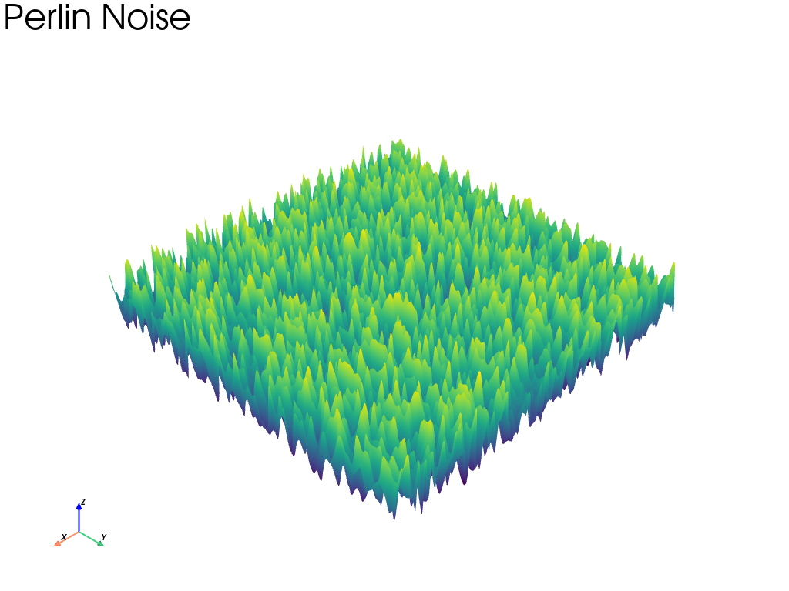
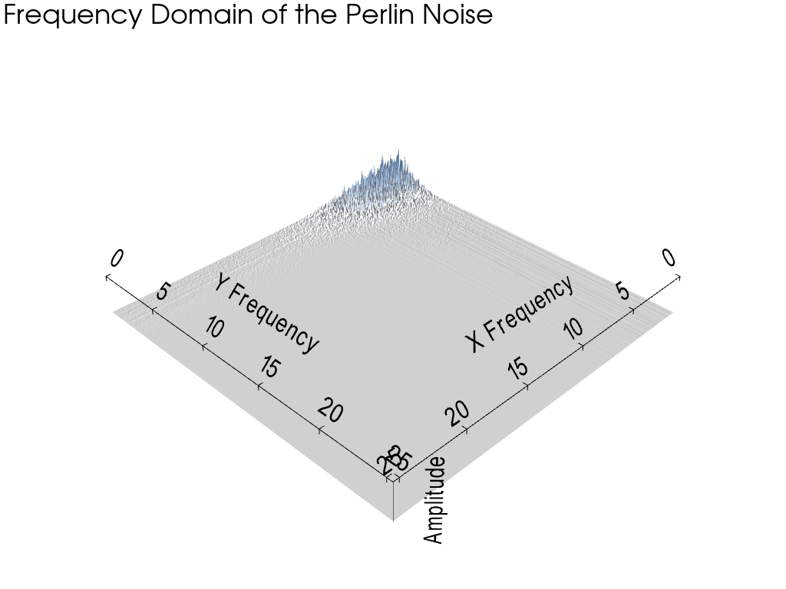
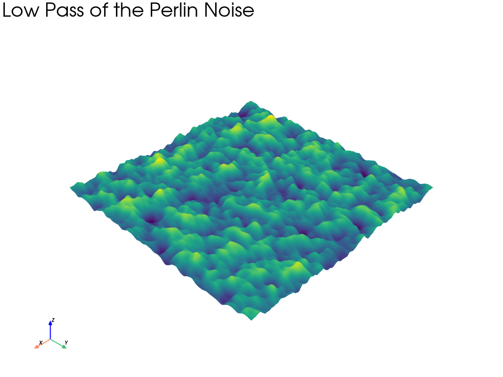
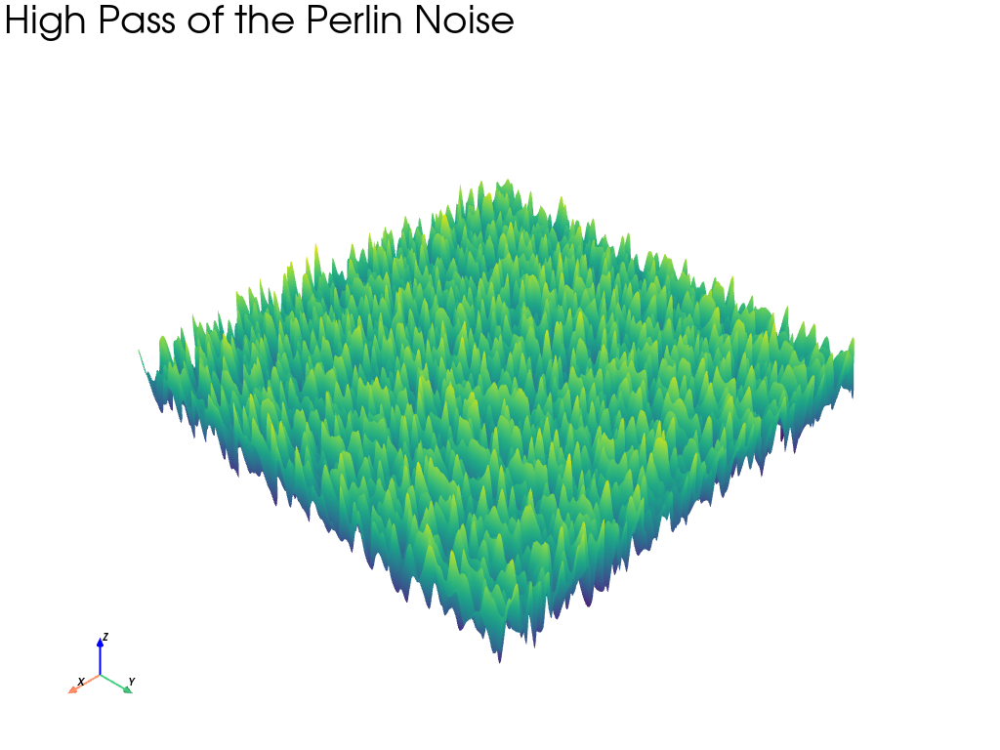
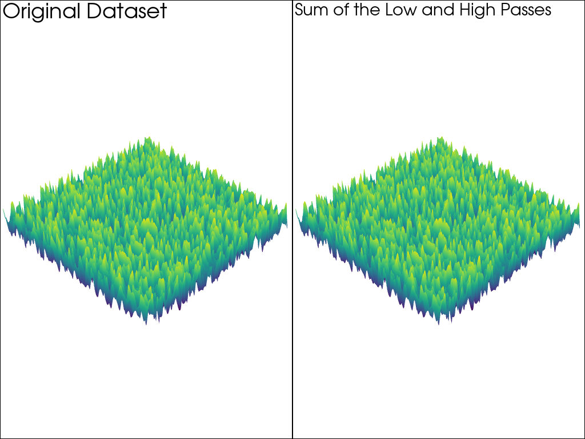
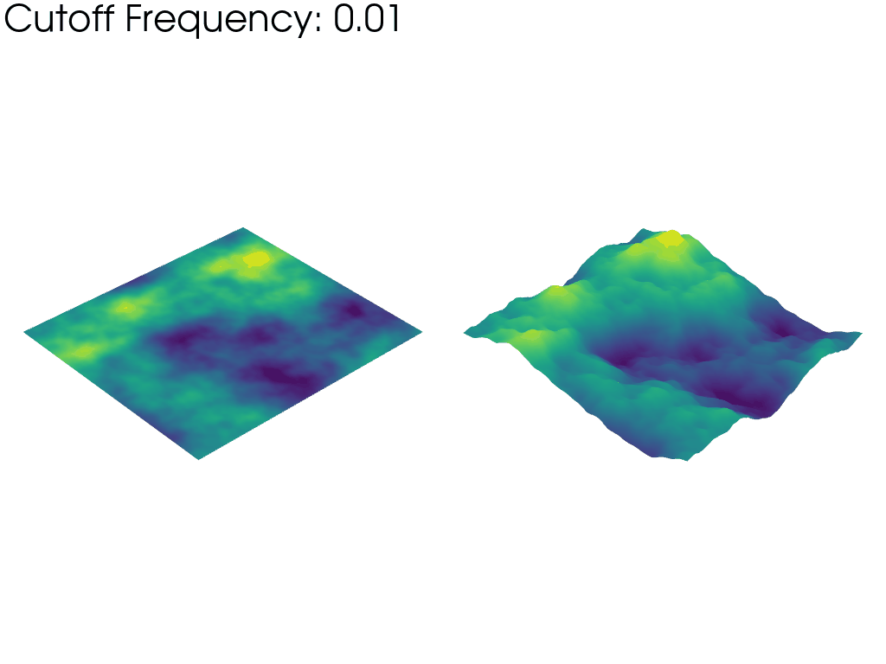

注釈
Click here to download the full example code
Perlinノイズによる高速フーリエ変換#
この例では， pyvista.UniformGridFilters.fft() フィルターを使用して， pyvista.UniformGrid に高速フーリエ変換（FFT）を適用する方法を示しています．
ここでは，まず pyvista.sample_function() を使って Perlin ノイズを生成して pyvista.perlin_noise をサンプリングし，そのノイズの周波数コンテンツを示すためにサンプルしたノイズを FFT して FFT 使用法を実演しています．
import numpy as np
import pyvista as pv
Perlinノイズの生成#
まず， サンプル関数:2DでのPerlinノイズ の例のように Perlin Noise を生成します．
なお，ここでは平面で生成し，x方向に10，y方向に5の周波数を使用しています．周波数の単位は 1/pixel です．
これは，FFTが2のべき乗の大きさの配列に対してより効率的であるためです．
freq = [10, 5, 0]
noise = pv.perlin_noise(1, freq, (0, 0, 0))
xdim, ydim = (2**9, 2**9)
sampled = pv.sample_function(noise, bounds=(0, 10, 0, 10, 0, 10), dim=(xdim, ydim, 1))
# warp and plot the sampled noise
warped_noise = sampled.warp_by_scalar()
warped_noise.plot(show_scalar_bar=False, text='Perlin Noise', lighting=False)

PerlinノイズのFFTを実行する#
次に，ノイズのFFTを行い，その周波数成分をプロットします．簡単のため，第1象限のみの内容をプロットします．
周波数を得るために numpy.fft.fftfreq() を使っていることに注意してください．
周波数領域をプロットする#
さて，ノイズを周波数領域でプロットしてみましょう．これは pyvista.perlin_noise で指定した周波数と一致しています．
# scale to make the plot viewable
subset['scalars'] = np.abs(subset.active_scalars)
warped_subset = subset.warp_by_scalar(factor=0.0001)
pl = pv.Plotter(lighting='three lights')
pl.add_mesh(warped_subset, cmap='blues', show_scalar_bar=False)
pl.show_bounds(
axes_ranges=(0, max_freq, 0, max_freq, 0, warped_subset.bounds[-1]),
xlabel='X Frequency',
ylabel='Y Frequency',
zlabel='Amplitude',
show_zlabels=False,
color='k',
font_size=26,
)
pl.add_text('Frequency Domain of the Perlin Noise')
pl.show()

ローパスフィルタ#
周波数成分に対してローパスフィルターをかけ，すぐに逆FFTをかけて空間(ピクセル)領域に変換してみましょう．
逆変換する場合は，実部のみを残します．虚部は，物理的な領域では何の意味も持ちません．PyVistaは虚部を削除しますが，その旨の警告を表示します．
予想通り，低周波のノイズしか見られません．
low_pass = sampled_fft.low_pass(1.0, 1.0, 1.0).rfft()
low_pass['scalars'] = np.real(low_pass.active_scalars)
warped_low_pass = low_pass.warp_by_scalar()
warped_low_pass.plot(show_scalar_bar=False, text='Low Pass of the Perlin Noise', lighting=False)

ハイパスフィルター#
今回は，周波数成分に対してハイパスフィルターをかけ，すぐに逆FFTをかけて空間(ピクセル)領域に変換してみましょう．
逆変換する場合は，実部のみを残します．虚部は，ピクセル領域では何の意味も持ちません．
予想通り，低周波のノイズが減衰しているため，高周波のノイズ成分しか見えません．
high_pass = sampled_fft.high_pass(1.0, 1.0, 1.0).rfft()
high_pass['scalars'] = np.real(high_pass.active_scalars)
warped_high_pass = high_pass.warp_by_scalar()
warped_high_pass.plot(show_scalar_bar=False, text='High Pass of the Perlin Noise', lighting=False)

ローパスとハイパスの和#
ローパスとハイパスの和が元のノイズと等しいことを示します．
grid = pv.UniformGrid(dims=sampled.dimensions, spacing=sampled.spacing)
grid['scalars'] = high_pass['scalars'] + low_pass['scalars']
print(
'Low and High Pass identical to the original:', np.allclose(grid['scalars'], sampled['scalars'])
)
pl = pv.Plotter(shape=(1, 2))
pl.add_mesh(sampled.warp_by_scalar(), show_scalar_bar=False, lighting=False)
pl.add_text('Original Dataset')
pl.subplot(0, 1)
pl.add_mesh(grid.warp_by_scalar(), show_scalar_bar=False, lighting=False)
pl.add_text('Sum of the Low and High Passes')
pl.show()

出力:
Low and High Pass identical to the original: True
アニメート#
カットオフ周波数の変化をアニメーションで表現します．
def warp_low_pass_noise(cfreq, scalar_ptp=sampled['scalars'].ptp()):
"""Process the sampled FFT and warp by scalars."""
output = sampled_fft.low_pass(cfreq, cfreq, cfreq).rfft()
# on the left: raw FFT magnitude
output['scalars'] = output.active_scalars.real
warped_raw = output.warp_by_scalar()
# on the right: scale to fixed warped height
output_scaled = output.translate((-11, 11, 0), inplace=False)
output_scaled['scalars_warp'] = output['scalars'] / output['scalars'].ptp() * scalar_ptp
warped_scaled = output_scaled.warp_by_scalar('scalars_warp')
warped_scaled.active_scalars_name = 'scalars'
# push center back to xy plane due to peaks near 0 frequency
warped_scaled.translate((0, 0, -warped_scaled.center[-1]), inplace=True)
return warped_raw + warped_scaled
# Initialize the plotter and plot off-screen to save the animation as a GIF.
plotter = pv.Plotter(notebook=False, off_screen=True)
plotter.open_gif("low_pass.gif", fps=8)
# add the initial mesh
init_mesh = warp_low_pass_noise(1e-2)
plotter.add_mesh(init_mesh, show_scalar_bar=False, lighting=False, n_colors=128)
plotter.camera.zoom(1.3)
for freq in np.geomspace(1e-2, 10, 25):
plotter.clear()
mesh = warp_low_pass_noise(freq)
plotter.add_mesh(mesh, show_scalar_bar=False, lighting=False, n_colors=128)
plotter.add_text(f"Cutoff Frequency: {freq:.2f}", color="black")
plotter.write_frame()
# write the last frame a few times to "pause" the gif
for _ in range(10):
plotter.write_frame()
plotter.close()

上のアニメーションの左側のメッシュは，FFT振幅の生の値に基づいてワープしています．これは，アニメーションが進むにつれて，より多くの周波数を考慮することで，完全なノイズサンプルの割合が徐々に大きくなっていくことを強調しています．このため，メッシュは「平坦」に始まり，周波数のカットオフが大きくなるにつれて大きくなっていきます．
一方，右側のメッシュは，カットオフ周波数に関係なく，常に同じ目に見える高さに反っています．これは，波長と周波数が反比例するため，カットオフ周波数を上げるとパーリンノイズの典型的な波長（特徴の大きさ）が減少することを強調しています．
Total running time of the script: ( 1 minutes 27.712 seconds)